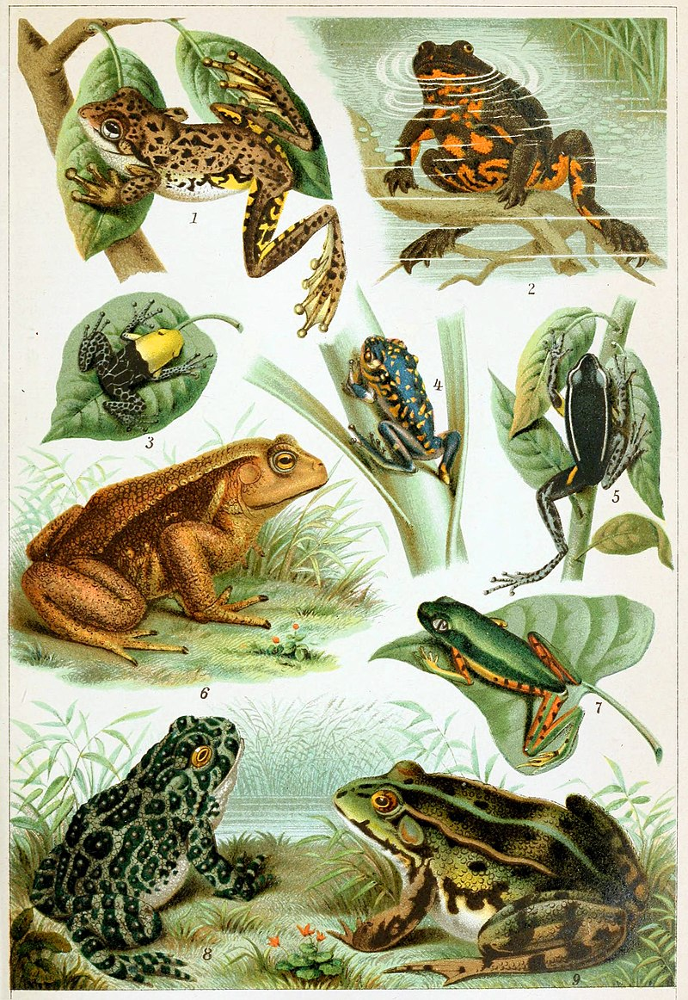
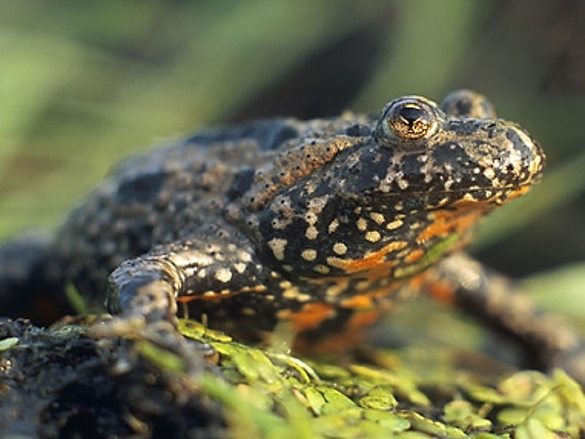
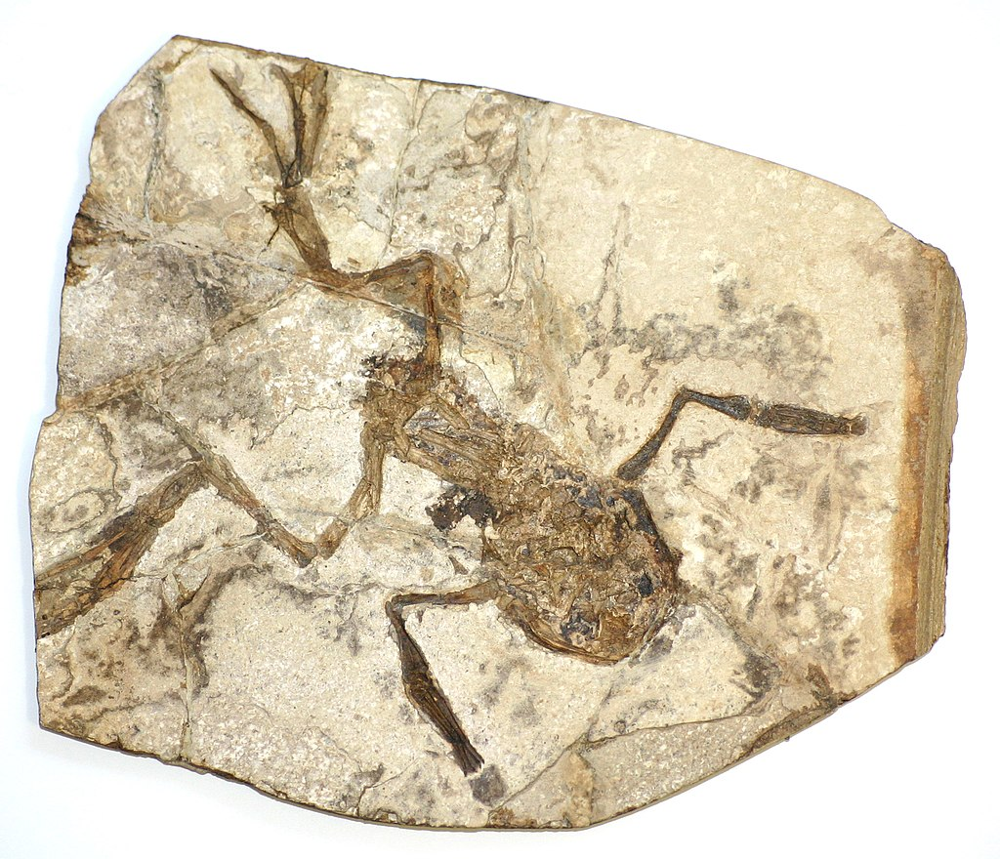
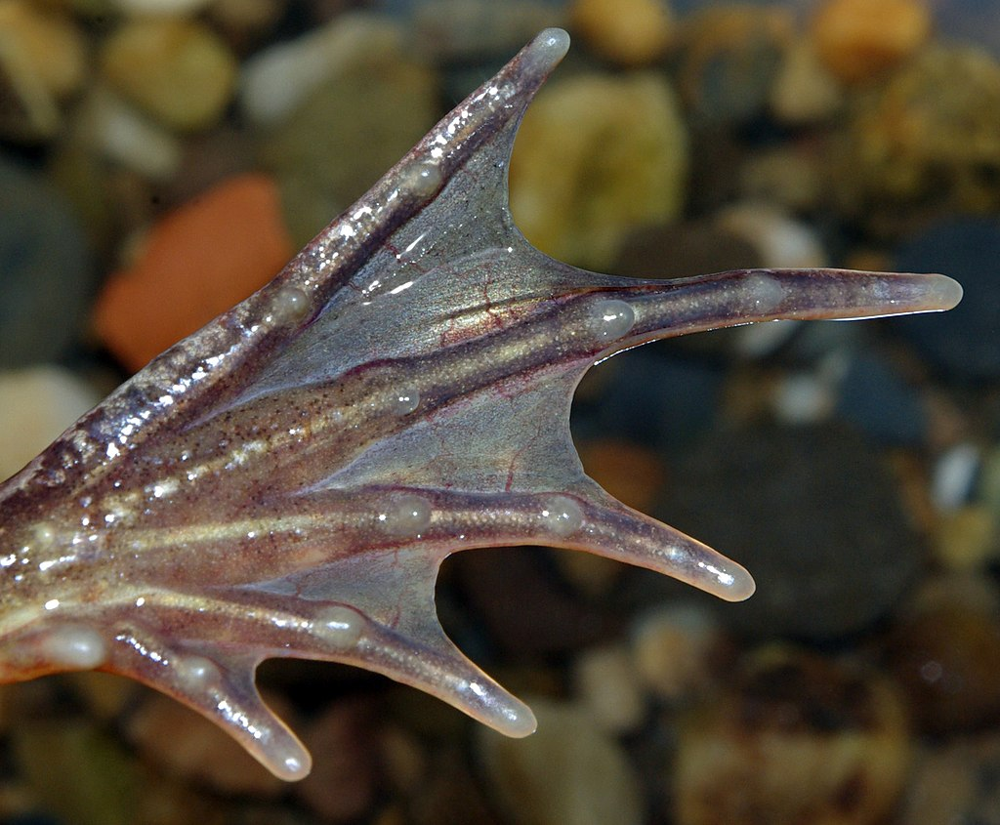
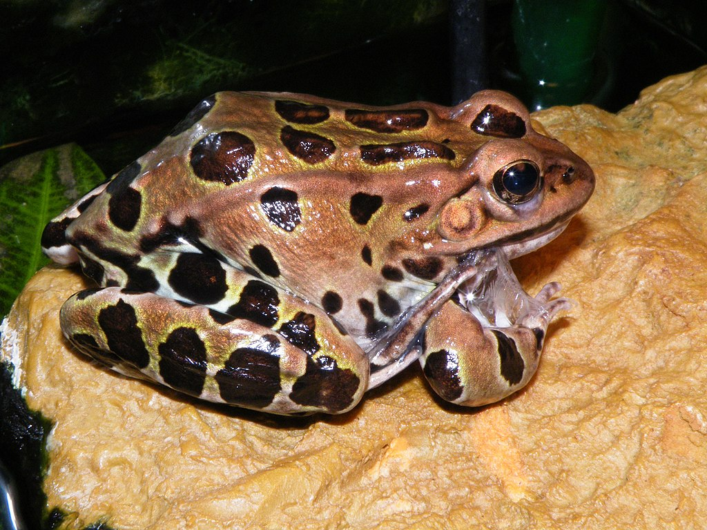

A frog is any member of a diverse and largely carnivorous group of short-bodied, tailless amphibians composing the order Anura[1] (ανοὐρά, literally without tail in Ancient Greek). The oldest fossil "proto-frog" Triadobatrachus is known from the Early Triassic of Madagascar, but molecular clock dating suggests their split from other amphibians may extend further back to the Permian, 265 million years ago. Frogs are widely distributed, ranging from the tropics to subarctic regions, but the greatest concentration of species diversity is in tropical rainforest. Frogs account for around 88% of extant amphibian species. They are also one of the five most diverse vertebrate orders. Warty frog species tend to be called toads, but the distinction between frogs and toads is informal, not from taxonomy or evolutionary history.
An adult frog has a stout body, protruding eyes, anteriorly-attached tongue, limbs folded underneath, and no tail (the tail of tailed frogs is an extension of the male cloaca). Frogs have glandular skin, with secretions ranging from distasteful to toxic. Their skin varies in colour from well-camouflaged dappled brown, grey and green to vivid patterns of bright red or yellow and black to show toxicity and ward off predators. Adult frogs live in fresh water and on dry land; some species are adapted for living underground or in trees.
Frogs typically lay their eggs in water. The eggs hatch into aquatic larvae called tadpoles that have tails and internal gills. They have highly specialized rasping mouth parts suitable for herbivorous, omnivorous or planktivorous diets. The life cycle is completed when they metamorphose into adults. A few species deposit eggs on land or bypass the tadpole stage. Adult frogs generally have a carnivorous diet consisting of small invertebrates, but omnivorous species exist and a few feed on plant matter. Frog skin has a rich microbiome which is important to their health. Frogs are extremely efficient at converting what they eat into body mass. They are an important food source for predators and part of the food web dynamics of many of the world's ecosystems. The skin is semi-permeable, making them susceptible to dehydration, so they either live in moist places or have special adaptations to deal with dry habitats. Frogs produce a wide range of vocalizations, particularly in their breeding season, and exhibit many different kinds of complex behaviors to attract mates, to fend off predators and to generally survive.
Frogs are valued as food by humans and also have many cultural roles in literature, symbolism and religion. They are also seen as environmental bellwethers, with declines in frog populations often viewed as early warning signs of environmental damage. Frog populations have declined significantly since the 1950s. More than one third of species are considered to be threatened with extinction and over 120 are believed to have become extinct since the 1980s. The number of malformations among frogs is on the rise and an emerging fungal disease, chytridiomycosis, has spread around the world. Conservation biologists are working to understand the causes of these problems and to resolve them.
The use of the common names frog and toad has no taxonomic justification. From a classification perspective, all members of the order Anura are frogs, but only members of the family Bufonidae are considered "true toads". The use of the term frog in common names usually refers to species that are aquatic or semi-aquatic and have smooth, moist skins; the term toad generally refers to species that are terrestrial with dry, warty skins.[2][3] There are numerous exceptions to this rule. The European fire-bellied toad (Bombina bombina) has a slightly warty skin and prefers a watery habitat[4] whereas the Panamanian golden frog (Atelopus zeteki) is in the toad family Bufonidae and has a smooth skin.
The origin of the order name Anura—and its original spelling Anoures—is the Ancient Greek "alpha privative" prefix ἀν- (an- from ἀ- before a vowel) 'without', and οὐρά (ourá) 'animal tail'. meaning "tailless". It refers to the tailless character of these amphibians.
The origins of the word frog are uncertain and debated.[11] The word is first attested in Old English as frogga, but the usual Old English word for the frog was frosc (with variants such as frox and forsc), and it is agreed that the word frog is somehow related to this. Old English frosc remained in dialectal use in English as frosh and frosk into the nineteenth century,[12] and is paralleled widely in other Germanic languages, with examples in the modern languages including German Frosch, Norwegian frosk, Icelandic froskur, and Dutch (kik)vors.[11] These words allow reconstruction of a Common Germanic ancestor *froskaz.[13] The third edition of the Oxford English Dictionary finds that the etymology of *froskaz is uncertain, but agrees with arguments that it could plausibly derive from a Proto-Indo-European base along the lines of *preu, meaning 'jump'.
How Old English frosc gave rise to frogga is, however, uncertain, as the development does not involve a regular sound-change. Instead, it seems that there was a trend in Old English to coin nicknames for animals ending in -g, with examples—themselves all of uncertain etymology—including dog, hog, pig, stag, and (ear)wig. Frog appears to have been adapted from frosc as part of this trend.
Meanwhile, the word toad, first attested as Old English tādige, is unique to English and is likewise of uncertain etymology. It is the basis for the word tadpole, first attested as Middle English taddepol, apparently meaning 'toad-head'.
About 88% of amphibian species are classified in the order Anura.[16] These include over 7,500 species[1] in 55 families, of which the Craugastoridae (850 spp.), Hylidae (724 spp.), Microhylidae (688 spp.), and Bufonidae (621 spp.) are the richest in species.
The Anura include all modern frogs and any fossil species that fit within the anuran definition. The characteristics of anuran adults include: 9 or fewer presacral vertebrae, the presence of a urostyle formed of fused vertebrae, no tail, a long and forward-sloping ilium, shorter fore limbs than hind limbs, radius and ulna fused, tibia and fibula fused, elongated ankle bones, absence of a prefrontal bone, presence of a hyoid plate, a lower jaw without teeth (with the exception of Gastrotheca guentheri) consisting of three pairs of bones (angulosplenial, dentary, and mentomeckelian, with the last pair being absent in Pipoidea),[18] an unsupported tongue, lymph spaces underneath the skin, and a muscle, the protractor lentis, attached to the lens of the eye.[19] The anuran larva or tadpole has a single central respiratory spiracle and mouthparts consisting of keratinous beaks and denticles.
Frogs and toads are broadly classified into three suborders: Archaeobatrachia, which includes four families of primitive frogs; Mesobatrachia, which includes five families of more evolutionary intermediate frogs; and Neobatrachia, by far the largest group, which contains the remaining families of modern frogs, including most common species throughout the world. The suborder Neobatrachia is further divided into the two superfamilies Hyloidea and Ranoidea.[20] This classification is based on such morphological features as the number of vertebrae, the structure of the pectoral girdle, and the morphology of tadpoles. While this classification is largely accepted, relationships among families of frogs are still debated.
The origins and evolutionary relationships between the three main groups of amphibians are hotly debated. A molecular phylogeny based on rDNA analysis dating from 2005 suggests that salamanders and caecilians are more closely related to each other than they are to frogs and the divergence of the three groups took place in the Paleozoic or early Mesozoic before the breakup of the supercontinent Pangaea and soon after their divergence from the lobe-finned fishes. This would help account for the relative scarcity of amphibian fossils from the period before the groups split.[24] Another molecular phylogenetic analysis conducted about the same time concluded that lissamphibians first appeared about 330 million years ago and that the temnospondyl-origin hypothesis is more credible than other theories. The neobatrachians seemed to have originated in Africa/India, the salamanders in East Asia and the caecilians in tropical Pangaea.[25] Other researchers, while agreeing with the main thrust of this study, questioned the choice of calibration points used to synchronise the data. They proposed that the date of lissamphibian diversification should be placed in the Permian, rather less than 300 million years ago, a date in better agreement with the palaeontological data.[26] A further study in 2011 using both extinct and living taxa sampled for morphological, as well as molecular data, came to the conclusion that Lissamphibia is monophyletic and that it should be nested within Lepospondyli rather than within Temnospondyli. The study postulated that Lissamphibia originated no earlier than the late Carboniferous, some 290 to 305 million years ago. The split between Anura and Caudata was estimated as taking place 292 million years ago, rather later than most molecular studies suggest, with the caecilians splitting off 239 million years ago.
In 2008, Gerobatrachus hottoni, a temnospondyl with many frog- and salamander-like characteristics, was discovered in Texas. It dated back 290 million years and was hailed as a missing link, a stem batrachian close to the common ancestor of frogs and salamanders, consistent with the widely accepted hypothesis that frogs and salamanders are more closely related to each other (forming a clade called Batrachia) than they are to caecilians.[28][29] However, others have suggested that Gerobatrachus hottoni was only a dissorophoid temnospondyl unrelated to extant amphibians.
Salientia (Latin salire (salio), "to jump") is the name of the total group that includes modern frogs in the order Anura as well as their close fossil relatives, the "proto-frogs" or "stem-frogs". The common features possessed by these proto-frogs include 14 presacral vertebrae (modern frogs have eight or 9), a long and forward-sloping ilium in the pelvis, the presence of a frontoparietal bone, and a lower jaw without teeth. The earliest known amphibians that were more closely related to frogs than to salamanders are Triadobatrachus massinoti, from the early Triassic period of Madagascar (about 250 million years ago), and Czatkobatrachus polonicus, from the Early Triassic of Poland (about the same age as Triadobatrachus).[31] The skull of Triadobatrachus is frog-like, being broad with large eye sockets, but the fossil has features diverging from modern frogs. These include a longer body with more vertebrae. The tail has separate vertebrae unlike the fused urostyle or coccyx in modern frogs. The tibia and fibula bones are also separate, making it probable that Triadobatrachus was not an efficient leaper.
The earliest known "true frogs" that fall into the anuran lineage proper all lived in the early Jurassic period.[2][32] One such early frog species, Prosalirus bitis, was discovered in 1995 in the Kayenta Formation of Arizona and dates back to the Early Jurassic epoch (199.6 to 175 million years ago), making Prosalirus somewhat more recent than Triadobatrachus.[33] Like the latter, Prosalirus did not have greatly enlarged legs, but had the typical three-pronged pelvic structure of modern frogs. Unlike Triadobatrachus, Prosalirus had already lost nearly all of its tail[34] and was well adapted for jumping.[35] Another Early Jurassic frog is Vieraella herbsti, which is known only from dorsal and ventral impressions of a single animal and was estimated to be 33 mm (1+1⁄4 in) from snout to vent. Notobatrachus degiustoi from the middle Jurassic is slightly younger, about 155–170 million years old. The main evolutionary changes in this species involved the shortening of the body and the loss of the tail. The evolution of modern Anura likely was complete by the Jurassic period. Since then, evolutionary changes in chromosome numbers have taken place about 20 times faster in mammals than in frogs, which means speciation is occurring more rapidly in mammals.
According to genetic studies, the families Hyloidea, Microhylidae, and the clade Natatanura (comprising about 88% of living frogs) diversified simultaneously some 66 million years ago, soon after the Cretaceous–Paleogene extinction event associated with the Chicxulub impactor. All origins of arboreality (e.g. in Hyloidea and Natatanura) follow from that time and the resurgence of forest that occurred afterwards.
Frogs have no tail, except as larvae, and most have long hind legs, elongated ankle bones, webbed toes, no claws, large eyes, and a smooth or warty skin. They have short vertebral columns, with no more than 10 free vertebrae and fused tailbones (urostyle or coccyx).[45] Frogs range in size from Paedophryne amauensis of Papua New Guinea that is 7.7 mm (0.30 in) in snout–to–vent length[46] to the up to 32 cm (13 in) and 3.25 kg (7.2 lb) goliath frog (Conraua goliath) of central Africa.[47] There are prehistoric, extinct species that reached even larger sizes.
The structure of the feet and legs varies greatly among frog species, depending in part on whether they live primarily on the ground, in water, in trees, or in burrows. Frogs must be able to move quickly through their environment to catch prey and escape predators, and numerous adaptations help them to do so. Most frogs are either proficient at jumping or are descended from ancestors that were, with much of the musculoskeletal morphology modified for this purpose. The tibia, fibula, and tarsals have been fused into a single, strong bone, as have the radius and ulna in the fore limbs (which must absorb the impact on landing). The metatarsals have become elongated to add to the leg length and allow frogs to push against the ground for a longer period on take-off. The ilium has elongated and formed a mobile joint with the sacrum which, in specialist jumpers such as ranids and hylids, functions as an additional limb joint to further power the leaps. The tail vertebrae have fused into a urostyle which is retracted inside the pelvis. This enables the force to be transferred from the legs to the body during a leap.
The muscular system has been similarly modified. The hind limbs of ancestral frogs presumably contained pairs of muscles which would act in opposition (one muscle to flex the knee, a different muscle to extend it), as is seen in most other limbed animals. However, in modern frogs, almost all muscles have been modified to contribute to the action of jumping, with only a few small muscles remaining to bring the limb back to the starting position and maintain posture. The muscles have also been greatly enlarged, with the main leg muscles accounting for over 17% of the total mass of frogs.
Many frogs have webbed feet and the degree of webbing is directly proportional to the amount of time the species spends in the water.[50] The completely aquatic African dwarf frog (Hymenochirus sp.) has fully webbed toes, whereas those of White's tree frog (Litoria caerulea), an arboreal species, are only a quarter or half webbed.[51] Exceptions include flying frogs in the Hylidae and Rhacophoridae, which also have fully webbed toes used in gliding.
Arboreal frogs have pads located on the ends of their toes to help grip vertical surfaces. These are not suction pads, the surface consisting instead of columnar cells with flat tops with small gaps between them lubricated by mucous glands. When the frog applies pressure, the cells adhere to irregularities on the surface and the grip is maintained through surface tension. This allows the frog to climb on smooth surfaces, but the system does not function efficiently when the pads are excessively wet.
In many arboreal frogs, a small "intercalary structure" on each toe increases the surface area touching the substrate. Furthermore, many arboreal frogs have hip joints that allow both hopping and walking. Some frogs that live high in trees even possess an elaborate degree of webbing between their toes. This allows the frogs to "parachute" or make a controlled glide from one position in the canopy to another.
Ground-dwelling frogs generally lack the adaptations of aquatic and arboreal frogs. Most have smaller toe pads, if any, and little webbing. Some burrowing frogs such as Couch's spadefoot (Scaphiopus couchii) have a flap-like toe extension on the hind feet, a keratinised tubercle often referred to as a spade, that helps them to burrow.
Sometimes during the tadpole stage, one of the developing rear legs is eaten by a predator such as a dragonfly nymph. In some cases, the full leg still grows, but in others it does not, although the frog may still live out its normal lifespan with only three limbs. Occasionally, a parasitic flatworm (Ribeiroia ondatrae) digs into the rear of a tadpole, causing a rearrangement of the limb bud cells and the frog develops one or more extra legs
A frog's skin is protective, has a respiratory function, can absorb water, and helps control body temperature. It has many glands, particularly on the head and back, which often exude distasteful and toxic substances (granular glands). The secretion is often sticky and helps keep the skin moist, protects against the entry of moulds and bacteria, and make the animal slippery and more able to escape from predators.[56] The skin is shed every few weeks. It usually splits down the middle of the back and across the belly, and the frog pulls its arms and legs free. The sloughed skin is then worked towards the head where it is quickly eaten.
Being cold-blooded, frogs have to adopt suitable behaviour patterns to regulate their temperature. To warm up, they can move into the sun or onto a warm surface; if they overheat, they can move into the shade or adopt a stance that exposes the minimum area of skin to the air. This posture is also used to prevent water loss and involves the frog squatting close to the substrate with its hands and feet tucked under its chin and body.[58] The colour of a frog's skin is used for thermoregulation. In cool damp conditions, the colour will be darker than on a hot dry day. The grey foam-nest tree frog (Chiromantis xerampelina) is even able to turn white to minimize the chance of overheating.
Many frogs are able to absorb water and oxygen directly through the skin, especially around the pelvic area, but the permeability of a frog's skin can also result in water loss. Glands located all over the body exude mucus which helps keep the skin moist and reduces evaporation. Some glands on the hands and chest of males are specialized to produce sticky secretions to aid in amplexus. Similar glands in tree frogs produce a glue-like substance on the adhesive discs of the feet. Some arboreal frogs reduce water loss by having a waterproof layer of skin, and several South American species coat their skin with a waxy secretion. Other frogs have adopted behaviours to conserve water, including becoming nocturnal and resting in a water-conserving position. Some frogs may also rest in large groups with each frog pressed against its neighbours. This reduces the amount of skin exposed to the air or a dry surface, and thus reduces water loss.[58] Woodhouse's toad (Bufo woodhousii), if given access to water after confinement in a dry location, sits in the shallows to rehydrate.[60] The male hairy frog (Trichobatrachus robustus) has dermal papillae projecting from its lower back and thighs, giving it a bristly appearance. They contain blood vessels and are thought to increase the area of the skin available for respiration.
Some species have bony plates embedded in their skin, a trait that appears to have evolved independently several times.[62] In certain other species, the skin at the top of the head is compacted and the connective tissue of the dermis is co-ossified with the bones of the skull (exostosis).
Camouflage is a common defensive mechanism in frogs. Features such as warts and skin folds are usually on ground-dwelling frogs, for whom smooth skin would not provide such effective camouflage. Certain frogs change colour between night and day, as light and moisture stimulate the pigment cells and cause them to expand or contract.[65] Some are even able to control their skin texture.[66] The Pacific tree frog (Pseudacris regilla) has green and brown morphs, plain or spotted, and changes colour depending on the time of year and general background colour.